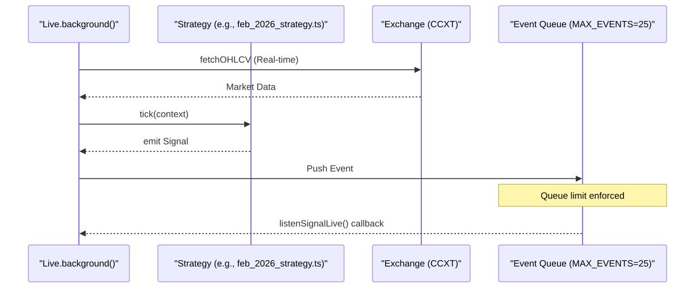

The Live Trading mode in the backtest-kit framework enables continuous strategy execution against real-time market data. Unlike backtesting, which iterates through historical data frames, Live mode operates in an infinite loop, managing the complete signal lifecycle with integrated crash recovery and persistence mechanisms.
The primary entry point for non-blocking live execution is Live.background(). This function initializes the trading environment and starts an asynchronous process that monitors market conditions and manages positions.
Live trading is governed by a while(true) loop within the Live.run() generator, which Live.background() consumes. To prevent overwhelming the exchange API and CPU, the system implements a pacing mechanism:
new Date()) for every tick.The following diagram illustrates the relationship between the Live process and the strategy execution components.
Live Execution and Signal Flow

Live trading is designed to be resilient against process crashes. It uses a suite of persistence adapters to save the state of active signals and schedules to the filesystem.
Data is stored in two primary directories within the project root:
data/signals/: Stores the current state of opened and active signals.data/risk/: Stores risk-related metadata and validation states.The system utilizes specific adapters to handle different stages of the signal lifecycle:
scheduled but not yet triggered.opened or active states.To prevent data corruption during a crash, the persistence layer uses an atomic write strategy:
*.json.tmp).Crash Recovery State Mapping
| Signal State | Persisted? | Adapter Class |
|---|---|---|
idle |
No | N/A |
scheduled |
Yes | PersistScheduleAdapter |
opened |
Yes | PersistSignalAdapter |
active |
Yes | PersistSignalAdapter |
closed |
No | N/A (Finalized) |
The technical implementation of Live mode differs significantly from Backtest mode to accommodate real-world constraints.
| Characteristic | Live Mode | Backtest Mode |
|---|---|---|
| Loop Type | Infinite while(true) |
Finite for loop over frames |
| Clock | new Date() (Real-time) |
Simulated Date from Frame Service |
| Queue Limit | MAX_EVENTS = 25 |
Unlimited |
| Pacing | TICK_TTL (1 min delay) |
Immediate (No delay) |
| Persistence | Enabled (Atomic FS writes) | Disabled (In-memory only) |
The live trading environment bridges high-level trading concepts with specific code entities and filesystem locations.
Entity Relationship Diagram

In Live mode, signals are processed through a state machine. The tick() function is the primary driver, checking if scheduled signals should move to opened, or if active positions should be closed based on real-time price updates or strategy logic.
Live trading requires enableRateLimit: true in the CCXT configuration to prevent IP bans. Furthermore, formatPrice and formatQuantity must use exchange-specific precision (priceToPrecision, amountToPrecision) to ensure orders are accepted by the exchange matching engine.